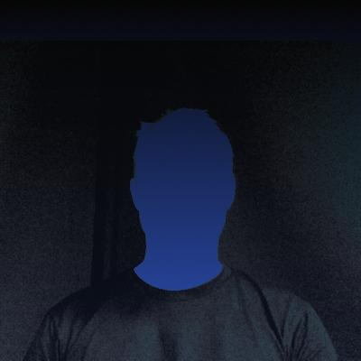

I’m doing my best to finish my new site, however, Netflix is getting in the way 😊. In the meantime here’s some links and a short bio:
A builder of scalable, inclusive, and performant UI’s. A lover of CSS, JS, and all things front end development/architecture.
